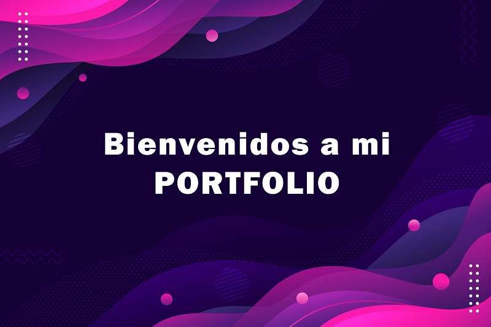

<div class="row">
  <h1>Proyectos Realizados</h1>
  <div class="contenedor"></div>
  <div class="col-sm-12 col-md-7 col-lg-7 texto">
    <h1>Portfolio Web - Argentina Programa (Agosto 2021 - Agosto 2022)</h1>
    <p>Proyecto final integrador propuesto como cierre de la segunda etapa (#YoProgramo) del curso Argentina Programa. Consiste en la creación de un Portfolio Web Full Stack, es decir, de mi propia aplicación web, en la que presento datos personales, mis estudios, experiencia laboral. Todo diseñado con una interfaz de usuario, base de datos y APIs correspondientes para su funcionamiento. </p>
    <div class="col-sm-12 col-md-3 col-lg-3 offset-md-1 offset-lg-1 imagen">
      
    </div>
  </div>
</div>>
